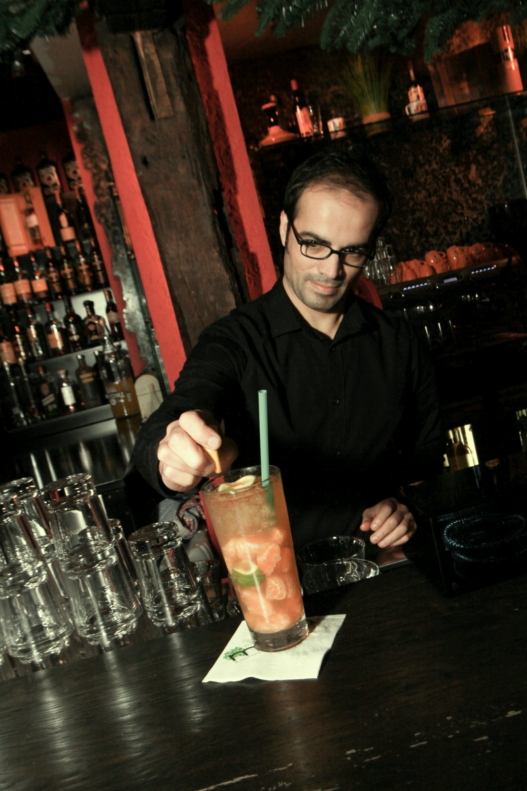
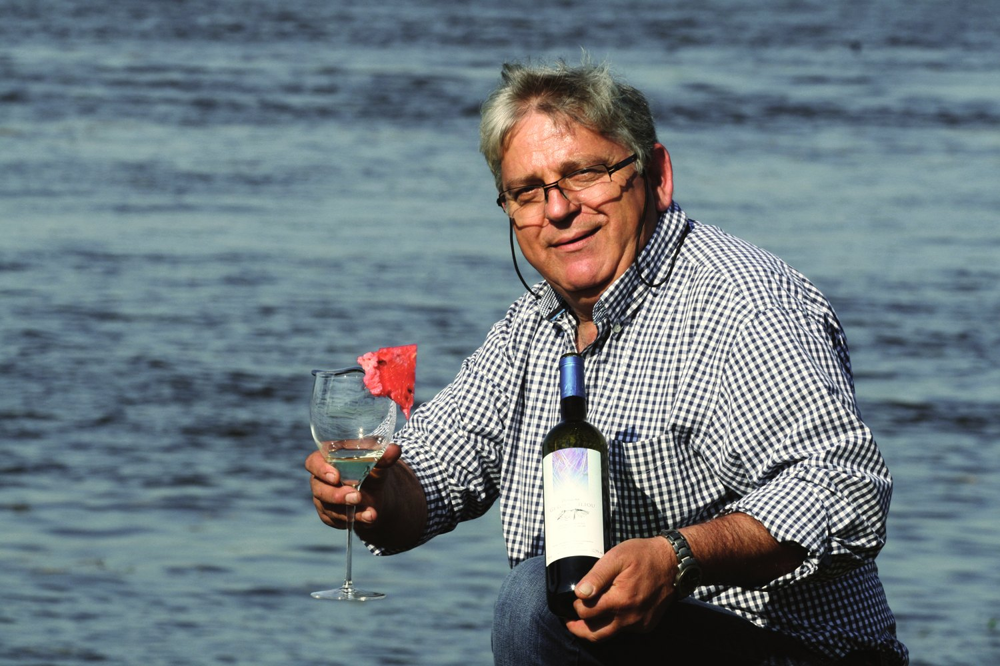

Nach dem Dorffest ist vor dem Dorffest
Timo Brand, Platzmeister, Hittfeld
Seit 25 Jahren baut Timo Brand den Festplatz auf. Für ihn beginnt das Dorffest schon im Oktober des Vorjahres.
Zur Story →
Menschen. Orte. Geschichten.
Timo Brand, Platzmeister, Hittfeld
Seit 25 Jahren baut Timo Brand den Festplatz auf. Für ihn beginnt das Dorffest schon im Oktober des Vorjahres.
Zur Story →
Ralf Borchers, Greenkeeper, Am Hockenberg
So kurz mäht Ralf Borchers jeden Morgen die Grüns am Hockenberg. Seit 1995 ist der Platz sein Revier.
„Der Platz ist eben nicht nur Sportstätte, sondern Lebensraum.“Zur Story →

Strandhalle, an der Elbe
Ein Biergarten direkt am Wasser. Wer einen Platz an der Uferkante bekommt, bleibt, bis es dunkel wird.
Zur Story →
BARrica, Hittfeld
Ein altes Fachwerkhaus mitten im Ort. Drinnen Eichenholz und Kerzenlicht, davor Marco am Tresen.
Zur Story →
Vahrendorf, Folge 1 von 2
Was kann ein Dorfmarkt heute, was er früher nicht musste? Ein Tag und eine Nacht.
Zur Story →
Uli Salm, Nordheide
Der Weltrekord für die größte Bassgitarren-Sammlung der Erde hängt nicht auf St. Pauli, sondern bei uns.
Zur Story →
Wirt, Nordheide
Griechische Küche, mitten in der Nordheide. Für das Foto hat er Tisch, Stühle und Wein einfach ans Elbufer getragen.
Zur Story →
Gesprächspartnerin, Nordheide
Ein Gespräch über den Ort, an dem man aufgewachsen ist. Und darüber, was man ihm zurückgibt.
Ermöglicht durch einen Patron aus der Region
Zur Story →Schreib uns, wer es ist und was er oder sie macht. Wir melden uns.
Danke, ist angekommen.